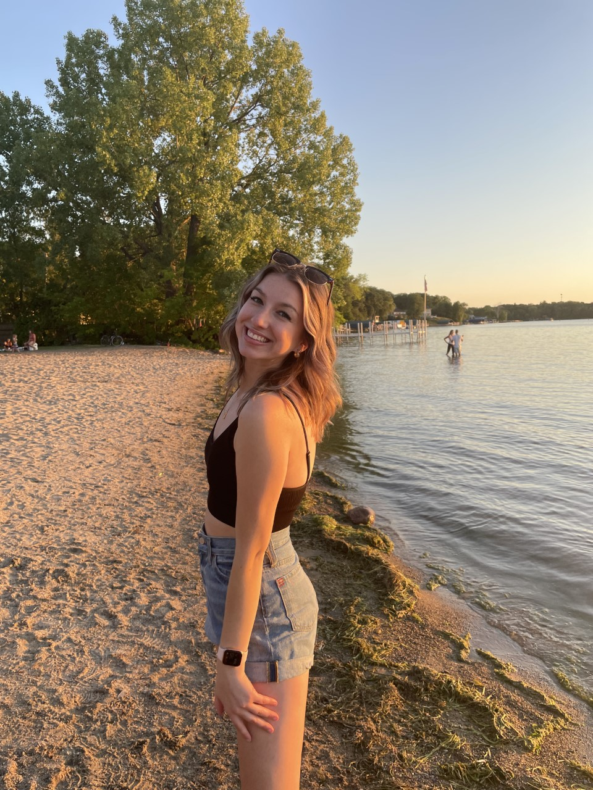

About Elizabeth
Elizabeth Christenson is currently a senior at the University of Wisconsin - Eau Claire, majoring in marketing and double minoring in management and multimedia communication. She grew up in Austin, Minnesota but has dreams of living in a big city some day. Elizabeth's creativity started from a young age and she has always loved being artistic and keeping up with the current trends. She is not very artistic on paper, and when she discovered making digital art/designs she knew this is what she wanted to do when she 'grew up.' Her father suggested she go into marketing when she entered college and now thrives in the industry.
In her spare time her favorite things to do include, hanging with her friends and family (and of course her dog Luna), spending time outside, working out, and shopping. She is an avid lover of lakes and hiking, or just about anything that will allow her to get a tan in the summer. In the winter she likes to stay inside to stay warm and online shop or watch a movie. Elizabeth loves the gym, and will jump at any opportunity to stay active.
School Achievements
Elizabeth has reached countless achievements at school. She has made the deans list 4 semesters and works hard to maintain a good GPA. She will graduate from UWEC in May 2022 with a marketing degree. She is involved in a professional business organization PSE on UWEC's campus, where she has been elected to the clubs executive board twice; first as the director of training and recruitment and then as the vice president of public relations. During her time in PSE she had the opportunity to attend a regional conference, where she placed first place in a marketing competition.
Marketing Career
Elizabeth is currently still in school, but has already had some experience in the real business world. In the summer of 2021, she worked as a marketing intern for Lyman Companies in Excelsior, MN. Lyman is a lumber and construction company, which was an entirely new industry for Elizabeth. She had the opportunity to lead a marketing recruitment campaign, sit in on executive team meetings, reorganize the company social media, and work with multiple of the company's divisions on new marketing strategies. After graduation, Elizabeth will continue her career with Lyman Companies in the Minneapolis/St. Paul area, as their marketing coordinator.